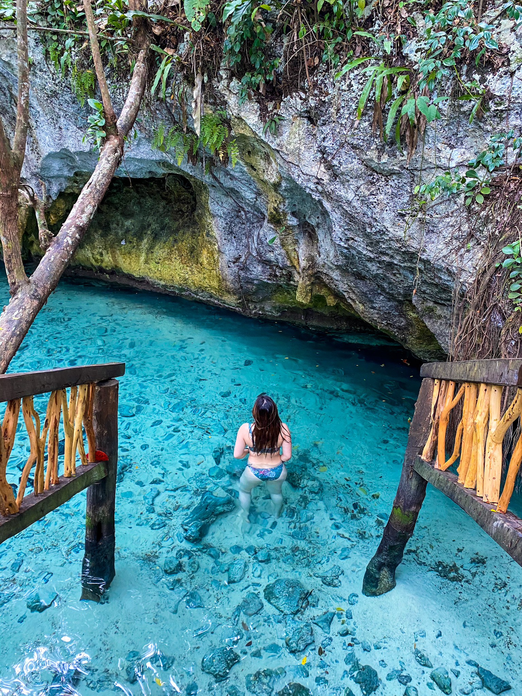
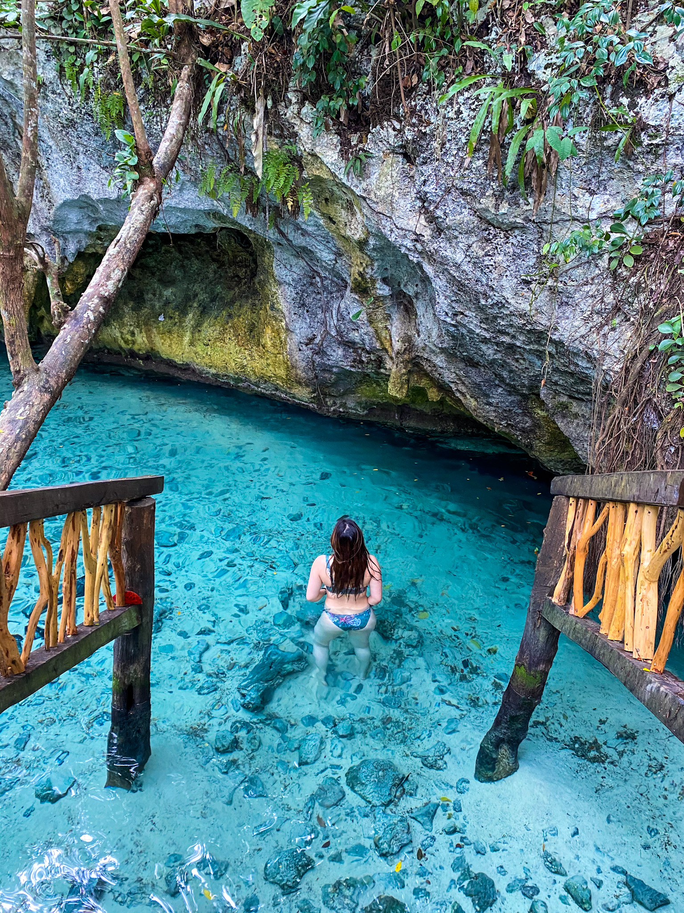

Hey, I'm Sheryl! Welcome to my travel blog!
I'm currently pursuing a Bachelor of Business Administration with a concentration in Marketing and Business Analytics at the University of Michigan. When I'm not sliding my way through the snow-covered pavements to class, you can catch me taking the next flight out of Michigan!
Growing up in Malaysia, I had the opportunity to travel around Southeast Asia. My first trip out of the country was when I was 6 years old and I was super excited to be visiting all the Disney princesses in Disneyland at Anaheim, LA! Ever since then, I fell in love with everything about travelling: exchanging cultures, exploring new eats and more.
I created this blog to share my travel photos, tips, thoughts, and stories with you!
My Favorite Places by far:
 
